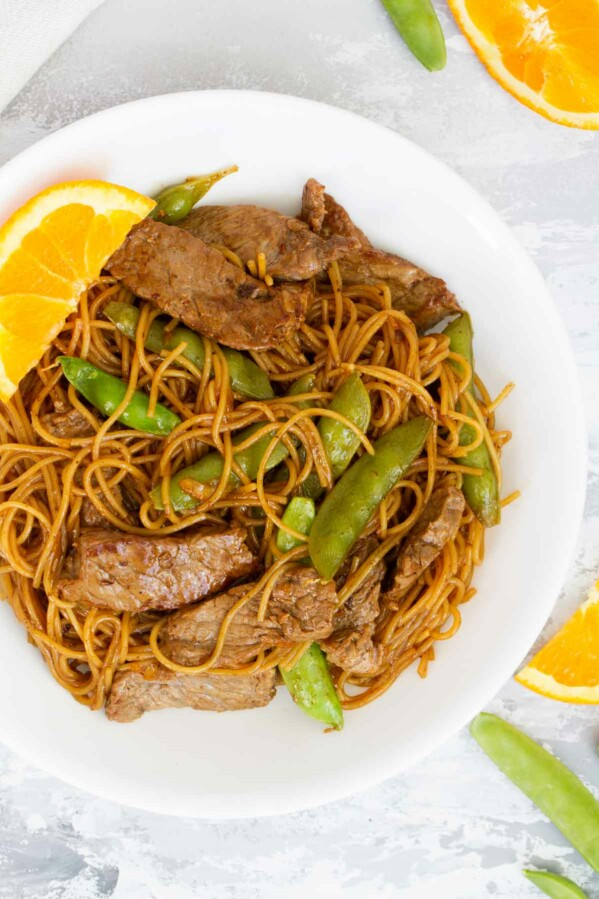

Orange Teriyaki Beef with Noodles

Description
This is one of my favorite asian noodle dishes to make!!! It combines egg noodles, sliced beef, and snap peas with an orange marmalade teriyaki sauce for an explosion of flavors. It's easy to make and lasts several meals.
Ingredients
- 1 pound beef boneless sirloin, cut into thin strips
- 1 can (14 1/2 ounces) beef broth
- 1/4 cup teriyaki stir-fry sauce
- 2 tablespoons orange marmalade
- dash of ground red pepper (cayenne)
- 1 1/2 cups snap pea pods
- 1 1/2 cups uncooked fine egg noodles (3 ounces)
Steps
- Spray 12-inch skillet with cooking spray; heat over medium-high heat. Cook beef in skillet 2 to 4 minutes, stirring occasionally, until brown. Remove beef from skillet; keep warm.
- Add broth, stir-fry sauce, marmalade, and red pepper to skillet. Heat to boiling. Stir in pea pods and noodles; reduce heat to medium. Cover and cook about 5 minutes or until noodles are tender.
- Stir in beef. Cook uncovered 2 to 3 minutes or until sauce is slightly thickened.